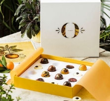
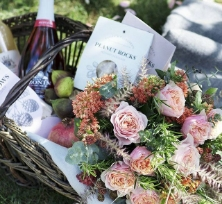
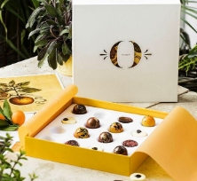
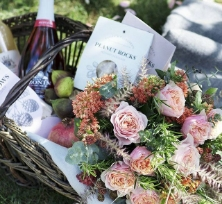

Ofte stillede spørgsmål
-
Jeg vil gern købe blomster i abonnement.
Vis mere1. Vælg abonnement på www.interflora.dk/abonnement: Du kan vælge mellem forskellige abonnementstyper, afhængig af, om du bestiller blomster for at forsøde din egen hverdag eller forkæle andre.
2. Vælg levering: Vælg de buketter, du vil have, fortæl os hvor de skal leveres til og hvornår de skal leveres. Du kan også skrive en hilsen, som skal vedlægges buketten.
3. Betal: Du opretter din egen profil, så du altid kan rette eller ændre din levering, opsige dit abonnement eller tilføje andre forkælelsesprodukter til din levering. Så går du til betaling – og så skal du ikke tænke mere over det: Vi husker blomsterne for dig.
Du skal være over 18 år for at kunne oprette et abonnement ellers skal vi bruge dine forældres eller værges samtykke.
-
Hvordan opretter jeg en brugerprofil på Interflora.dk?
Vis mereDu kan oprette profil ved at klikke på ”Opret profil” . Så følger du blot de forskellige trin – det er nemt og hurtigt. Du kan også logge ind med Facebook – du skal blot følge instruktionerne på skærmen.
-
Hvordan logger jeg ind?
Vis mereEKSAMEN OG SVENDEPRØVE
Du skal bruge dit login (din e-mail) og et kodeord, du selv vælger. Du kan bruge dette link.
-
Kan jeg bestille uden at være logget ind?
Vis mereEKSAMEN OG SVENDEPRØVE
Ja, det kan du godt. Hvis du køber et abonnement, bliver der automatisk oprettet en profil, som giver dig mulighed for at administrere dit abonnement og får overblik over dine ordrer.